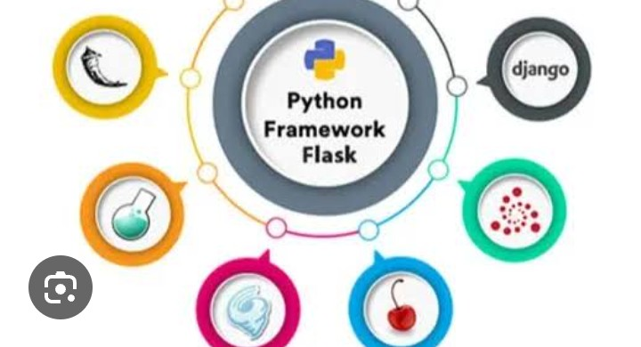
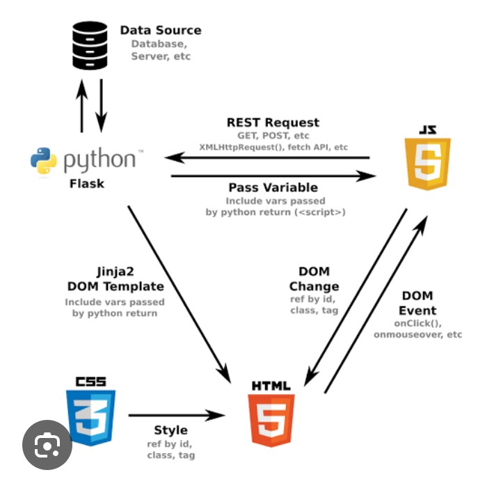
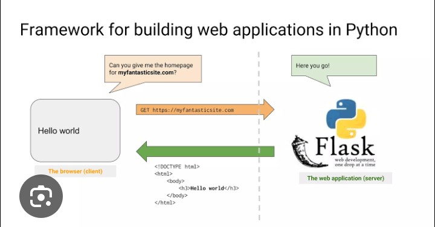

Flask is a lightweight and powerful web framework written in Python. It is designed to help developers build web applications quickly while keeping the code simple and flexible. Unlike larger frameworks, Flask provides only the essential tools required for web development, allowing developers to choose additional libraries according to their project needs. Because of its simplicity, Flask is one of the best frameworks for beginners who want to learn backend development with Python.
Flask is widely used for developing APIs, personal websites, dashboards, portfolio websites, small business applications, and even large-scale web applications. Many developers choose Flask because it is easy to learn, highly customizable, and provides complete control over the project structure.

Flask is an open-source Python web framework created by Armin Ronacher. It follows a minimalistic approach, meaning it includes only the basic features needed to build a web application. Developers can install extra packages whenever additional functionality is required.
Flask is often called a "micro framework" because it keeps the core framework small while allowing unlimited customization through extensions.
Flask is an excellent choice for beginners and professionals because it is easy to understand and extremely flexible.
Before installing Flask, make sure Python is already installed on your computer. Flask can be installed using the pip package manager.
pip install flask
Verify the installation:
pip show flask
If Flask is installed successfully, information about the installed package will appear.
One of the biggest advantages of Flask is that your first web application requires only a few lines of code.
from flask import Flask
app = Flask(__name__)
@app.route("/")
def home():
return "Welcome to Flask!"
if __name__ == "__main__":
app.run(debug=True)
Save the file as app.py and run:
python app.py
Open your browser and visit:
http://127.0.0.1:5000/
You will see the message "Welcome to Flask!".
Routes tell Flask which function should run when a user visits a specific URL. Every route represents a webpage or endpoint.
@app.route("/about")
def about():
return "This is the About Page."
Now visiting /about will display the About page.

Instead of returning plain text, Flask can also return HTML content.
@app.route("/")
def home():
return """
My Flask Website
Learning Flask is fun!
"""
Although this works, professional developers usually use HTML template files instead of writing HTML directly inside Python code.
Debug mode automatically reloads the application whenever changes are made to the code. It also displays detailed error messages, making debugging much easier during development.
app.run(debug=True)
Debug mode should only be used during development and should always be disabled before deploying a website to a production server.
Suppose you want to build a personal portfolio website with a contact form. Flask can easily handle different pages such as Home, About, Projects, Blog, and Contact while processing user requests efficiently. Because Flask is lightweight, it performs well even for small projects and APIs.
Templates allow developers to separate Python code from HTML. Instead of writing HTML inside Python files, Flask stores HTML pages inside a templates folder. This makes projects cleaner, more organized, and easier to maintain.
Create a folder named templates and add a file called index.html.
Flask Website Welcome to My Flask Website
This page is loaded using a Flask template.
Render the template using:
from flask import render_template
@app.route("/")
def home():
return render_template("index.html")
Flask allows developers to send data from Python to HTML templates. This makes websites dynamic because content can change according to user requests or database records.
@app.route("/")
def home():
return render_template("index.html", name="Asim")
Inside index.html:
Welcome {{ name }}
Output:
Welcome Asim
Flask can receive information submitted by users through HTML forms. This feature is commonly used for contact forms, login pages, registration systems, and search bars.
from flask import request
@app.route("/submit", methods=["POST"])
def submit():
username = request.form["username"]
return "Hello " + username
The request object gives access to data sent by the user.
Dynamic routes allow parts of a URL to change. This is useful for profile pages, blog posts, and product details.
@app.route("/user/")
def user(name):
return "Welcome " + name
Example:
/user/Ali Output: Welcome Ali
Flask can work with databases such as SQLite, MySQL, and PostgreSQL. For beginners, SQLite is often the easiest choice because it does not require a separate database server.
import sqlite3
connection = sqlite3.connect("students.db")
Databases allow applications to store users, products, messages, blog posts, and many other types of information.
Although Flask is lightweight, many powerful extensions are available to add extra functionality.
Flask allows developers to create custom error pages that improve the user experience.
@app.errorhandler(404)
def not_found(error):
return "Page Not Found", 404
Instead of showing a default browser error, users will see a friendly custom message.
Imagine building an online library system. Visitors can search books, students can register, librarians can add new books, and administrators can manage the entire system. Flask handles user requests, connects with the database, processes information, and displays dynamic web pages efficiently. This flexibility makes Flask a popular choice for small and medium-sized web applications.
After completing a Flask project, the next step is deployment. Deployment means publishing your web application on a live server so people around the world can access it through the internet. Before deployment, developers should disable debug mode, organize project files, install project dependencies, and test the application thoroughly. Flask applications can be deployed using services such as Render, PythonAnywhere, Railway, VPS servers, or cloud platforms.
app.run(debug=False)
Debug mode should always be turned off before deploying a production application because it may expose sensitive information to users.
Keeping a Flask project organized is very important. A clean project structure makes development easier and helps other developers understand your code.
project/ │── app.py │── templates/ │── static/ │── css/ │── js/ │── images/ │── database.db │── requirements.txt
The templates folder stores HTML files, while the static folder contains CSS, JavaScript, images, and other static resources.
Following best practices helps developers write clean, secure, and maintainable Flask applications.
Learning Flask can help you start a career in backend web development. Many companies and freelance clients use Flask for APIs, dashboards, automation tools, and business applications.
Both Flask and Django are excellent Python web frameworks, but they serve different purposes. Flask is lightweight, flexible, and ideal for beginners or small projects. Django is a full-featured framework with built-in tools for authentication, database management, security, and administration. Developers choose the framework based on the project's requirements.
Flask is one of the easiest and most flexible Python web frameworks available today. Its lightweight design, simple syntax, and extensive extension ecosystem make it an excellent choice for beginners as well as professional developers. Whether you want to build a portfolio website, REST API, business dashboard, blogging platform, or complete web application, Flask provides all the essential tools needed to create modern and scalable solutions. By practicing regularly and building real-world projects, you can master Flask and take an important step toward becoming a professional Python web developer.
